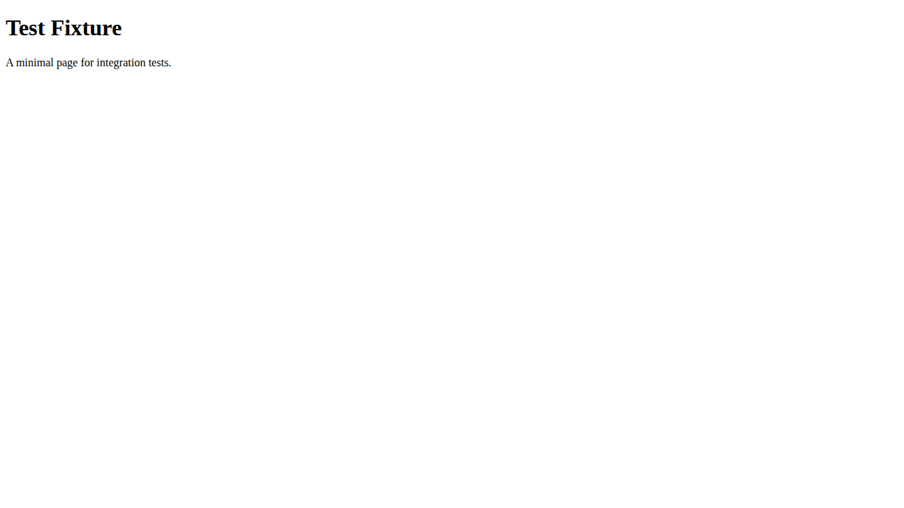

01
Landing page changes
Catch broken navigation, console errors, accessibility regressions, and budget misses before a campaign or redesign goes live.
 Web Quality Gatekeeper
Web Quality Gatekeeper
Web release confidence
Web Quality Gatekeeper runs browser checks, accessibility scans, Lighthouse budgets, and visual diffs in one place. The result is evidence a developer can act on and a reviewer can trust.
Useful at the decision point
Start with a single page and a sensible policy. Add baselines and broader coverage only when the project needs them.
Catch broken navigation, console errors, accessibility regressions, and budget misses before a campaign or redesign goes live.
Put a clear pass or fail signal beside the code review, then attach the report and summaries when the result needs a closer look.
Compare new renders against a small set of trusted screenshots when layout, content, or styling changes are risky.
A short path from URL to decision
Validate the target, collect evidence, and write outputs that work for people and automation.
Supply a URL, configuration, policy, and optional visual baseline. Host and redirect checks keep the audit pointed at the intended site.
Playwright loads the page while axe, Lighthouse, runtime diagnostics, and visual comparison work from the same audit context.
Read the report, use the summaries in CI, and keep screenshots or diffs beside the result when a change needs follow-up.
A real committed fixture
The sample is a committed fixture run. Its report, screenshots, configuration, and raw data are linked together here.

Each link opens an actual output from the same public sample run.
| HTML report | Reviewer-facing results, checks, screenshots, and diagnostics. |
|---|---|
| Summary JSON | Machine-readable status and metrics for dashboards or custom checks. |
| Action plan | Prioritized remediation notes when a run finds something to fix. |
| Risk ledger | A compact merge-review companion built from the audit outputs. |
| Lighthouse data | The raw performance evidence behind the reported score. |
Choose your starting point
The GitHub Action is the fastest route for an existing repository. A source checkout is useful when you want to try the CLI locally or contribute to the project.
Put one quality gate into a pull request workflow.
jobs:
web-quality:
runs-on: ubuntu-latest
steps:
- uses: actions/checkout@df4cb1c069e1874edd31b4311f1884172cec0e10
- uses: Jahrome907/web-quality-gatekeeper@v3
with:
url: https://your-site.exampleRun a local audit from the compiled CLI.
npm run engines:check
npm ci
npx playwright install chromium
npm run build
node dist/cli.js audit https://your-site.example --policy marketing
Keep site-specific settings in the repository being audited, usually at
.github/web-quality/config.json. Start from the shipped
default configuration.
The Action exposes report, summary, action-plan, and risk-ledger paths as outputs. Upload only the artifacts that are appropriate for the target being audited.
Internal and authenticated audits need an explicit setup. Review the security policy before enabling output publication.
Practical guardrails
{kind=link}